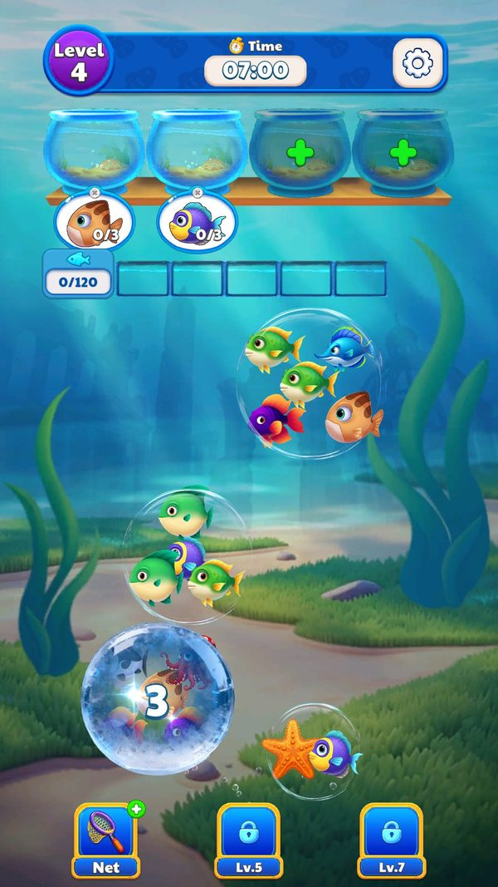
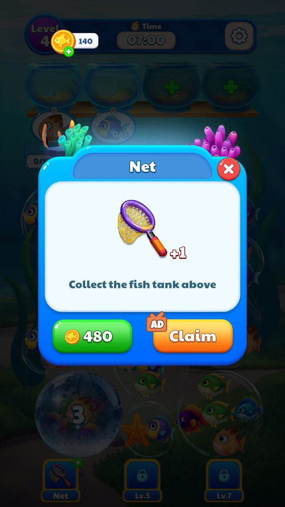
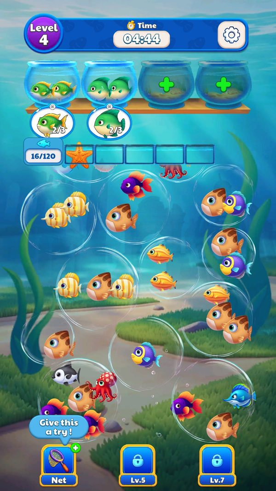
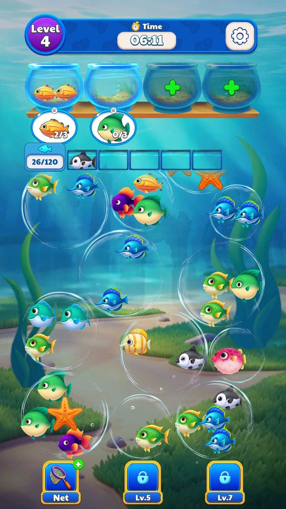
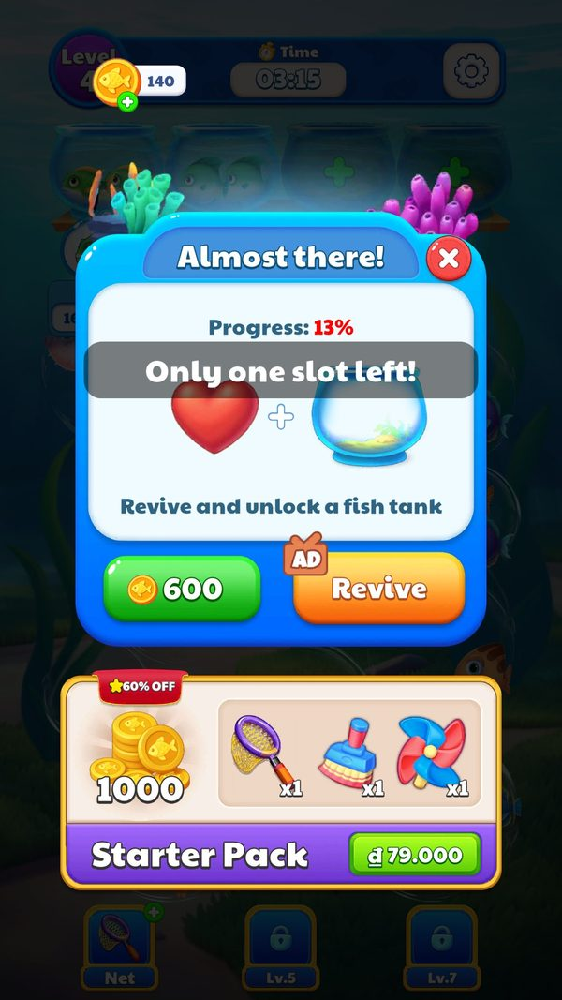
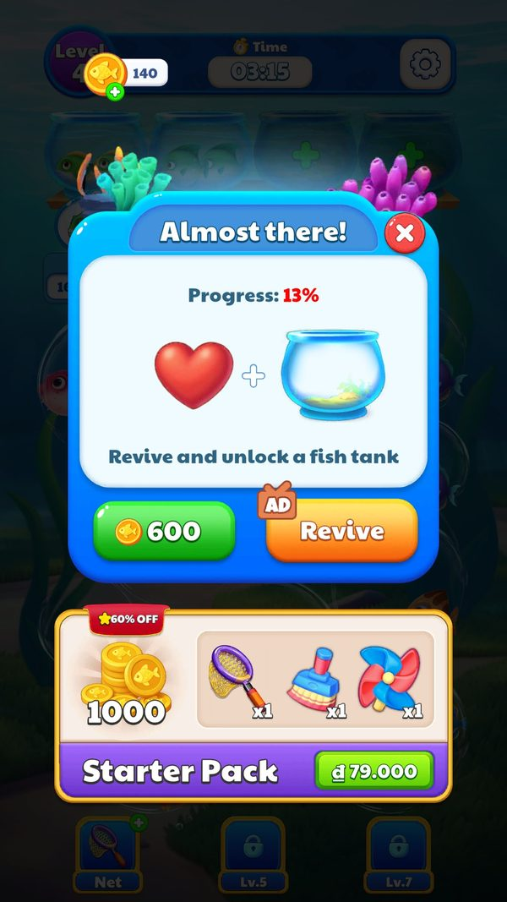
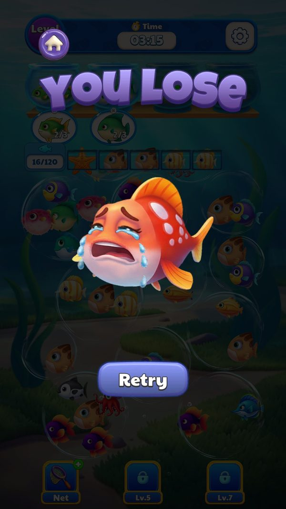
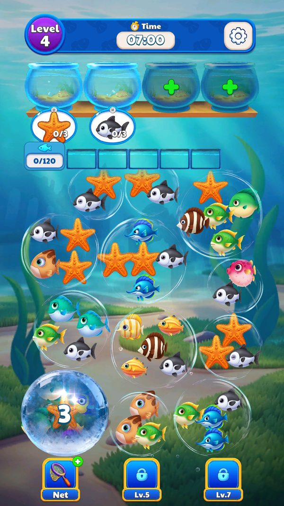
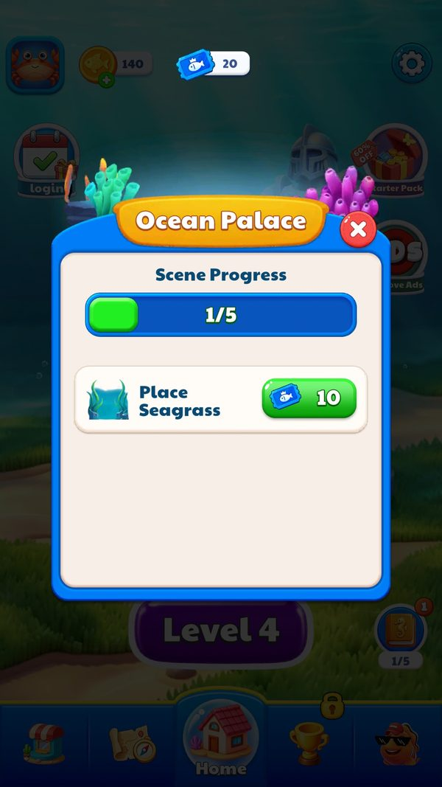
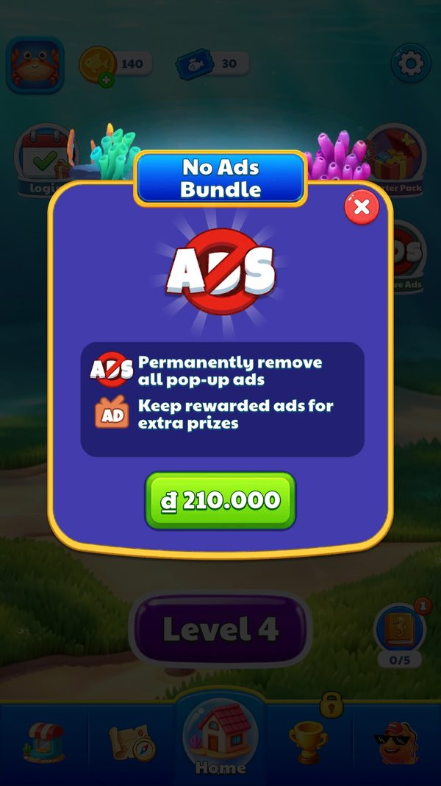

Điểm chạm kiếm tiền trong màn chơi
Trong một màn, người chơi được mời trả vàng hoặc xem quảng cáo ở đâu, theo thứ tự nào, giá bao nhiêu, và vì sao quảng cáo luôn thắng.
Bài này đi theo một màn chơi từ lúc bấm Play tới lúc thắng hoặc thua, chỉ ra mọi chỗ game mời trả vàng hoặc xem quảng cáo. Đọc khoảng 6 phút. Muốn biết vì sao người chơi hay kẹt đúng lúc thì đọc tiếp bài “Mô hình quảng cáo”.
- ✅ Giá trị thật: lấy thẳng từ code, config server thật, save hoặc ảnh chụp khi chơi.
- 🧪 Ví dụ minh họa: con số đầu vào giả định để thấy cơ chế chạy; cách tính trong ví dụ là cách tính thật trong code.
- Tên kỹ thuật (class, method, key) để trong ngoặc hoặc ở dòng bằng chứng, để tra code khi cần.
Tóm tắt nhanh
- Booster mở dần nhưng không tặng cái nào. Lưới mở ở level 3, Xoá sạch ở level 5, Làm mới ở level 7; server đặt số booster tặng là 0.Ví dụ ✅ Ở level 4, thanh booster có Lưới, hai ô kia ghi “Lv.5” và “Lv.7”; số Lưới trong túi = 0 (save 06/10).
- Lần đầu bấm booster luôn là một lời mời mua. Popup hiện hai nút: trả vàng hoặc xem quảng cáo.Ví dụ ✅ JadeGill bấm Lưới khi có 140 vàng → popup “Net”: 480 vàng hoặc AD Claim (ảnh booster_net_buy).
- Đứng yên 6 giây là bị nhắc dùng booster. Server bật tính năng này, client mặc định tắt.Ví dụ ✅ Bong bóng “Give this a try!” hiện trên nút Lưới (BoosterHint = 1_6).
- Hồi sinh bù đúng thứ vừa thiếu. Hết giờ thì thêm 120 giây; đầy ô chờ thì mở thêm 1 bể; đơn đếm ngược hết giờ thì bỏ qua đơn đó.Ví dụ ✅ Đầy ô chờ ở level 4 → “Revive and unlock a fish tank”, 600 vàng hoặc 1 quảng cáo (ảnh levelend_revive).
- Panel hồi sinh đánh vào tiếc nuối. Nó hiện % tiến độ, số cá thu thập sắp mất và chào Starter Pack ngay bên dưới.Ví dụ ✅ “Progress: 13%” khi mới xếp 16/120 cá; dưới đó là Starter Pack 79.000₫.
- Thắng còn được mời xem thêm quảng cáo. Nút nhân thưởng (MultiReward) do server bật.Ví dụ ✅ Live: MultiReward = 1, mặc định client = 0. Hệ số nhân (server, chưa đọc được).
- Vàng gần như không dùng được với người chơi miễn phí. Thu nhập quá thấp so với giá.Ví dụ 🧪 Giả định 30 vàng mỗi màn thắng (suy luận từ save): cần 16 màn cho 1 Lưới, 20 màn cho 1 lần hồi sinh.
Ví dụ xuyên suốt: JadeGill chơi level 4 hai lần và thua cả hai (06/10/2026)
✅ Tài khoản test JadeGill, level 4 (bảng LevelConfig2: 420 giây, 120 cá), có 140 vàng sau điểm danh, 0 booster, 5 mạng. Mọi dòng lấy từ ảnh chụp và save thật.
| Lúc | Người chơi làm gì | Game phản hồi | Kết quả / số dư |
|---|---|---|---|
| 07:00 (chưa chạm) | Bấm Play | Màn mở: 2 bể mở, 2 bể khoá dấu +, 5 ô chờ, bộ đếm 0/120 | ✅ đồng hồ đứng yên tới lần chạm đầu |
| 07:00 | Bấm thử nút Lưới | Popup Net: 480 vàng hoặc AD Claim; đồng hồ dừng | ✅ 140 vàng < 480 nên chỉ dùng được nút quảng cáo |
| Đứng yên vài giây | Không thao tác | Bong bóng “Give this a try!” trên nút Lưới | ✅ gợi ý booster sau 6 giây |
| Giữa màn | Xếp được 26/120 cá | Cá không khớp nằm lại ô chờ | ✅ ảnh level4_midgame_holding |
| Còn 03:15 | Ô chờ đầy | Toast “Only one slot left!” rồi panel “Almost there!”: Progress 13%, 600 vàng / AD Revive, khối Starter Pack 79.000₫ | ✅ 16/120 cá; vàng vẫn 140, không đủ hồi sinh bằng vàng |
| Ngay sau | Đóng panel | Màn “YOU LOSE” với Retry và Home | ✅ không mất mạng: 10001 vẫn 5 |
| Lượt 2 | Bấm Retry | Cùng level 4 nhưng bộ loài cá đổi hẳn | ✅ ảnh level4_retry_new_fish |
| Lượt 2, khi đầy ô chờ | Lại đóng panel hồi sinh | Thua lần 2 | ✅ Progress 30% (36/120 cá); mạng vẫn 5 |
| Cuối phiên | Về Home | Panel khu trưng bày tự bật | ✅ Save: ReviveNumber 0, Lưới 0, UnlockTipItemTip = true, NoAdCount 2 |
Trong hai lượt, JadeGill gặp 4 lời mời (mua Lưới, gợi ý booster, hồi sinh ×2) và 2 lần thấy Starter Pack. Không lời mời nào trả được bằng vàng hiện có, nên lựa chọn thật chỉ là: xem quảng cáo, mua Starter Pack, hoặc thua.


















Ảnh chụp minh họa (4)
Ảnh chụp từ game thật trên LDPlayer. Bấm ảnh để phóng to, phím ← → để chuyển ảnh.
Luồng hoạt động (13 bước)
Tóm lại: vào màn → thanh booster theo level → kẹt thì nhắc booster → bấm booster: vàng hoặc quảng cáo → đầy ô chờ / hết giờ → hồi sinh: vàng hoặc quảng cáo (+ Starter Pack) → thua hoặc thắng → thắng: nhân thưởng bằng quảng cáo → quảng cáo xen kẽ từ level 8
- 1Vào mànClientGame đọc cấu hình màn và chọn sẵn vài thời điểm trong màn dễ làm người chơi kẹt (xem bài mô hình quảng cáo).Ví dụ ✅ Level 4 nhánh LevelConfig2 có một cửa sổ ở 45–75% tiến độ, tức từ con cá thứ 54 tới thứ 90 trong 120 con.
DjT£¹.xqºA → ¨z¼Á.Y¼¢gg → LevelConfig.Vic~y; LevelConfig2.json level 4 PointRangeStr 0.45,0.75 - 2Hiện thanh booster theo levelClientBooster chưa tới level thì hiện khoá kèm level mở. Búa có trong danh sách vật phẩm nhưng không có trên thanh.Ví dụ ✅ Level 4: Lưới dùng được, hai ô còn lại ghi “Lv.5” và “Lv.7”.
UIPanelLevel.UnlockTipItemLevel = 3, UnlockClearItemLevel = 5, UnlockRefreshItemLevel = 7 - 3Giới thiệu booster lần đầuClientPopup giải thích booster mới, chỉ hiện một lần. Số booster tặng kèm do server quyết định.Ví dụ ✅ Server gửi items_number = 0_0_0 → không tặng Lưới nào; save ghi UnlockTipItemTip = true sau khi xem.
UIPanelItemTip; GUIDE_DATA_KEY.UnlockTipItemTip; SDKManager.get_TipItemNum - 4Nhắc dùng booster khi đứng yênClientKhông thao tác một lúc thì nút Lưới hiện bong bóng gợi ý.Ví dụ ✅ BoosterHint = 1_6 → sau 6 giây hiện “Give this a try!”.
SDKManager.get_IsBoosterHint, get_BoosterHintTime - 5Bấm booster khi hếtPlayerPopup mua mở và đồng hồ dừng: trả vàng hoặc xem quảng cáo để nhận 1 cái.Ví dụ ✅ 1 Lưới = 480 vàng hoặc 1 quảng cáo. Nhãn giá trong code: Xoá sạch 420, Búa 200, Làm mới 550 (chưa đo).
UIPanelLevelItem.Open; switch 0x4e21..0x4e24 → “480”/“420”/“200”/“550”; chuỗi GetItem_Ad, GetItem_Coin - 6Dùng boosterClientTrừ booster, áp hiệu ứng, đếm số booster đã dùng trong màn.Ví dụ 🧪 Có 1 Lưới, bấm dùng → bể phía trên được gom luôn (“Collect the fish tank above”), LevelItemNumber 0 → 1.
¨z¼Á.¤xi¢ (LevelData +0x1c); chuỗi GameUse; SDKManager.item_cost - 7Bấm bể khoá (dấu +)PlayerPopup mở bể có ba nút: miễn phí, trả vàng, xem quảng cáo (suy luận theo tên nút). Giá chưa đo.Ví dụ ✅ Level 4 có 2 bể mở và 2 bể khoá. 🧪 Bấm bể khoá → chọn nút quảng cáo → có thêm 1 bể để gom cá.
TargetItem.OnHandleClick, UnlockTarget; UIPanelUnlockTarget chuỗi Root/BtnFree, Root/BtnBuy/TxtGoldCount, Root/BtnAdv - 8Cảnh báo sắp đầyClientCòn 1 ô chờ thì hiện toast cảnh báo.Ví dụ ✅ “Only one slot left!” ngay trước panel hồi sinh.
ảnh levelend_revive_toast - 9Thua và chọn kiểu hồi sinhClientGame xem nguyên nhân thua rồi chọn lời mời phù hợp.Ví dụ ✅ Code có 3 kiểu: hết giờ → “复活并加时 (120s)”; đầy ô chờ → “复活并解锁鱼缸” (mở thêm bể) hoặc “复活并清空暂存区” (xoá ô chờ) nếu đã mở hết bể; đơn hết giờ → “跳过订单” (bỏ qua đơn).
UIPanelRevive.OnShow: nhánh 0/1/2; hằng 0x42f00000 = 120.0 - 10Hiện lời mời hồi sinhPlayerPanel ghi % tiến độ, giá vàng, nút quảng cáo, số cá thu thập sắp mất và khối Starter Pack.Ví dụ ✅ Progress 13% (16/120 cá), nút 600 vàng, nút AD Revive, Starter Pack 79.000₫ bên dưới.
UIPanelRevive.¥LO chuỗi Root/Content/Revive/BtnBuy/TxtGoldCount, BtnRevive, CollectionTip/TxtCollectCount, Gift/NewbieGiftPack; SDKManager.game_revive - 11Từ chối hồi sinhPlayerMàn thua có Retry và Home. Nếu đang đua sự kiện, màn thua còn hiện vị trí trong cuộc đua.Ví dụ ✅ Thua 2 lần ở level 4 mà mạng vẫn 5.
UIPanelFail.OnInit chuỗi Root/BtnHome, Root/BtnNext, Root/ActivityPlayerPart; ITEM_DATA_KEY 10001 - 12Thắng mànClientCộng vàng theo số hiển thị; nút nhân thưởng mời xem quảng cáo. Sau đó có thể có quảng cáo xen kẽ.Ví dụ 🧪 Thắng màn được 30 vàng (suy luận), bấm nhân thưởng → xem 1 quảng cáo → nhận thêm theo hệ số (server, chưa đọc được).
UIPanelWin: FUN_013075fc(…, 0x2712, n, “GameReward”); chuỗi MultiReward; SDKManager.ShowInterAd(level−1, “Win”) - 13Lưu và đồng bộClientSau giao dịch hoặc hết màn, game đẩy bản lưu lên cloud.Ví dụ ✅ UIPanelWin, UIPanelFail, UIPanelRevive, UIPanelLevelItem đều gọi đẩy cloud.
GameCloud.UploadCloudArchive
Nhánh & ngoại lệ
| Khi | Thì | Ví dụ | Bằng chứng |
|---|---|---|---|
| Level 1–2 | Chưa có booster và chưa có thời điểm kẹt nào được cài. | ✅ LevelConfig level 1–2 có NoAdWeight = 1,0; booster đầu tiên mở ở level 3. | UnlockTipItemLevel = 3; LevelConfig.json level 1–2 |
| Không có quảng cáo sẵn sàng hoặc mất mạng | Không nhận được booster/hồi sinh qua quảng cáo (suy luận); chỉ còn vàng. | 🧪 Mất mạng ở level 4 với 140 vàng → không xem được quảng cáo, không đủ 600 vàng → thua. | SDKManager.ShowRewardAd(Action<bool>, string, VideFlag) |
| Không đủ vàng | Nút vàng không thực hiện được; nhiều khả năng game mở Shop (suy luận, chưa quan sát). | ✅ 140 vàng so với giá 480 (Lưới) và 600 (hồi sinh). | UIPanelShop.Open(bool) |
| Đã mua No Ads | Mọi lời mời quảng cáo thưởng vẫn còn; chỉ quảng cáo pop-up bị gỡ.  | ✅ Gói No Ads ghi “Keep rewarded ads for extra prizes”. | SDKManager.SetIsNoAd; ảnh shop_no_ads_bundle |
| Đã mở hết bể khoá mà vẫn đầy ô chờ | Hồi sinh đổi sang xoá ô chờ. | 🧪 Đã mở cả 2 bể khoá ở level 4, lại đầy ô chờ → nút hồi sinh ghi “复活并清空暂存区”. | UIPanelRevive.OnShow nhánh 1 |
| Server tắt gợi ý booster hoặc nhân thưởng | Mặc định client tắt cả hai: mất nhắc booster và mất nút nhân thưởng. | ✅ Mặc định client: BoosterHint 0_6, MultiReward 0. | config_default_vs_live.json |
| Hồi sinh lần hai trong cùng màn | Giá lần hai chưa đo; game có sẵn bộ đếm số lần hồi sinh để tăng giá (suy luận). | ✅ JadeGill chưa hồi sinh lần nào: ReviveNumber = 0. | LEVEL_DATA_KEY.ReviveNumber |

Bản đồ điểm chạm trong một màn
Tóm lại: đứng yên → nhắc booster → hết booster → mua → kẹt bể → mở bể → thua → hồi sinh + Starter Pack → thắng → nhân thưởng → quảng cáo xen kẽ
| Thời điểm | Điểm chạm | Trả bằng vàng | Trả bằng quảng cáo | Ví dụ | Số liệu do |
|---|---|---|---|---|---|
| Đứng yên 6 giây | Nhắc dùng Lưới | — | — | ✅ “Give this a try!” | Server |
| Bấm booster khi hết | Mua 1 booster | Lưới 480 (đo); Xoá sạch 420, Làm mới 550 (nhãn) | 1 quảng cáo / 1 booster | ✅ 140 vàng → chỉ còn nút AD | Client + Đo trên máy |
| Bấm bể khoá | Mở thêm bể | Có (giá chưa đo) | Có | 🧪 Bấm dấu + ở level 4 → popup Free/Buy/Adv | Client |
| Thua | Hồi sinh | 600 (lần đầu) | 1 quảng cáo | ✅ Progress 13%, 600 / AD Revive | Đo trên máy |
| Thua | Starter Pack | 79.000 ₫ | — | ✅ khối ngay dưới panel hồi sinh | Đo trên máy |
| Thắng | Nhân thưởng | — | 1 quảng cáo | 🧪 thắng được 30 vàng, xem quảng cáo để nhân | Server |
| Sau thắng / bỏ màn | Quảng cáo xen kẽ | — | bắt buộc, từ level 8 | ✅ không thấy ở level 4 | Server |
Ba kiểu hồi sinh
Tóm lại: thua vì gì → bù đúng thứ đó
Hồi sinh không phải một gói chung mà bù đúng thứ người chơi vừa thiếu. Lời mời vì thế luôn có vẻ hợp lý.
| Nguyên nhân | Tiêu đề | Nút hồi sinh | Ví dụ |
|---|---|---|---|
| Hết giờ | 时间到了 (hết giờ) | 复活并加时 (120s) | 🧪 Còn 10 cá thì hết 420 giây → hồi sinh được thêm 120 giây |
| Đầy ô chờ, còn bể khoá | 放不下了 (không còn chỗ) | 复活并解锁鱼缸 | ✅ Level 4: “Revive and unlock a fish tank” |
| Đầy ô chờ, hết bể khoá | 放不下了 | 复活并清空暂存区 | 🧪 Đã mở đủ 4 bể → hồi sinh xoá sạch 5 ô chờ |
| Đơn đếm ngược hết giờ | 订单超时 (đơn quá giờ) | 跳过订单 | 🧪 Level 29 bảng gốc có bể đếm ngược 30/60/90 giây → hết giờ thì được bỏ qua bể đó |
Giá vàng so với thu nhập vàng
Tóm lại: thu nhập ~30 vàng/màn → giá 480–600 vàng → vàng chỉ là mỏ neo giá cho quảng cáo
Thu nhập miễn phí: khoảng 30 vàng mỗi màn thắng (suy luận từ 90 vàng sau 3 màn) và 350 vàng mỗi chu kỳ điểm danh. Hệ quả: vàng gần như vô nghĩa với người chơi miễn phí, và mỗi lời mời trong màn trở thành một lần xem quảng cáo. Đây là lựa chọn có chủ đích của một game sống bằng quảng cáo.
| Món | Giá (vàng) | Màn thắng tương đương | Quy ra tiền (Coins 1) | Ví dụ |
|---|---|---|---|---|
| 1 Lưới | 480 | 16 (suy luận) | 41.600 ₫ | ✅ JadeGill 140 vàng: thiếu 340 |
| 1 lần hồi sinh | 600 | 20 (suy luận) | 52.000 ₫ | ✅ thiếu 460 vàng ngay lần thua đầu |
| Toàn bộ vàng 1 tuần điểm danh | 350 | ≈ 12 (suy luận) | ≈ 30.300 ₫ | ✅ ngày 1 cho 50 vàng: 90 → 140 |
Nhịp mở khoá và quà khởi đầu bằng 0
- Booster mở dày ở đầu game. Trùng lúc các cơ chế khó đầu tiên xuất hiện.Ví dụ ✅ Bong bóng đóng băng từ level 3; ở nhánh 2, bong bóng xích mở từ level 7 — cùng level với Làm mới.
- Không có booster miễn phí lúc mở khoá. Lần dùng đầu tiên vì vậy là quảng cáo.Ví dụ ✅ Người mới bắt đầu với 0 vàng, 0 booster (ItemConfig) và items_number = 0_0_0.
- Điểm danh bù một ít booster. Người quay lại hằng ngày có vài cái dùng dần.Ví dụ ✅ Ngày 2 cho 1 Lưới, ngày 4 cho 1 Xoá sạch, ngày 6 cho 1 Làm mới, ngày 7 cho đủ ba.
- Không có booster trước màn. Mọi booster chỉ dùng được khi đang chơi.Ví dụ 🧪 Không có cách nào mang sẵn 1 Lưới vào level khó như nhiều game sort khác.
Số liệu chính
| Chỉ số | Giá trị | Số liệu do | Nguồn |
|---|---|---|---|
| Giá Lưới (20001) | 480 vàng hoặc 1 quảng cáo | Đo trên máy | ảnh booster_net_buy; UIPanelLevelItem case 0x4e21 |
| Nhãn giá Xoá sạch / Búa / Làm mới | 420 / 200 / 550 vàng (chưa đo) | Client | UIPanelLevelItem switch 0x4e22/0x4e23/0x4e24 |
| Level mở booster | Lưới 3 · Xoá sạch 5 · Làm mới 7 | Client | appendix/unlock-levels.md |
| Booster tặng khi mở | 0 / 0 / 0 | Server | items_number = 0_0_0 |
| Giá hồi sinh lần đầu | 600 vàng hoặc 1 quảng cáo | Đo trên máy | ảnh levelend_revive |
| Hồi sinh khi hết giờ | +120 giây | Client | UIPanelRevive.OnShow hằng 0x42f00000 |
| Gợi ý booster | sau 6 giây đứng yên | Server | BoosterHint 1_6 |
| Tiến độ khi thua (level 4) | 13% (16/120) và 30% (36/120) | Đo trên máy | feature_extras.json LevelEnd.observed |
| Vàng mỗi màn thắng | ≈ 30 (suy luận) | Đo trên máy | playerprefs_2026-10-06: 90 vàng sau 3 màn |
Đánh giá
Thang 1–5 (với tiêu chí rủi ro, 5 = rủi ro cao). Trung bình: 3.6.
| Tiêu chí | Điểm | Nhận xét |
|---|---|---|
| Sức ép chi tiêu | 4/5 | Lời mời đến đúng lúc kẹt, có áp lực thời gian và tiếc nuối: ví dụ panel ghi 13% tiến độ và số cá thu thập sắp mất. |
| Độ hợp tình huống | 5/5 | Hồi sinh đổi phần thưởng theo nguyên nhân thua (thêm 120 giây / mở bể / xoá ô chờ / bỏ đơn). |
| Cân bằng cho người không trả tiền | 3/5 | Luôn có nút quảng cáo nên không bị chặn cứng; nhưng 140 vàng không mua nổi món nào trong màn. |
| Minh bạch giá | 3/5 | Giá in rõ trên nút; chưa rõ giá hồi sinh có tăng theo số lần không, và bốn booster có bốn giá khác nhau (200–550). |
| Rủi ro gây khó chịu | 3/5 | Một màn có thể gặp mua booster + mở bể + hồi sinh + nhân thưởng + xen kẽ; JadeGill gặp 4 lời mời chỉ trong 2 lượt level 4. |
- Hồi sinh theo nguyên nhân thua — ít game sort làm kỹ tới mức này.
- Starter Pack nằm ngay trên panel hồi sinh, đúng khoảnh khắc người chơi thiếu 460 vàng.
- Thua ở màn đầu không trừ mạng (5 mạng sau 2 lần thua), giảm cảm giác bị phạt khi mới học.
- Không tặng booster khi mở khoá nên trải nghiệm booster đầu tiên luôn gắn với quảng cáo hoặc một giá vàng không với tới.
- Thu nhập vàng quá thấp khiến các nút trả vàng gần như trang trí với người chơi miễn phí.
- Thiếu một món IAP rẻ ngay trong màn (ví dụ gói “qua màn khó” dưới 52.000₫).
- Cộng với các thời điểm kẹt được cài sẵn (bài mô hình quảng cáo), người chơi có thể nhận ra màn bị “sắp đặt”, ảnh hưởng đánh giá trên store.
- Ở thị trường có ít quảng cáo (fill rate thấp), người chơi miễn phí gần như không có lối thoát khi kẹt.
- Tặng 1–2 booster khi mở khoá mỗi loại (đặt items_number = 1_1_1 trên server) để người chơi thấy giá trị trước khi phải trả.
- Hạ giá hồi sinh lần đầu xuống ngang vài màn thắng (ví dụ 300 vàng ≈ 10 màn) rồi tăng dần theo số lần hồi sinh.
- Thêm gói nhỏ trong panel thua cho người đã mua Starter Pack (ví dụ 1 hồi sinh + 2 booster, dưới 52.000₫).
- Đặt trần số lời mời quảng cáo mỗi màn (ví dụ tối đa 3) và ghi log từng điểm chạm để đo tỉ lệ đồng ý.
Liên quan
Kết thúc màn và hồi sinh Cơ chế chơi trong màn Kinh tế: mạng, vàng, vé cá Quảng cáo Hướng dẫn người chơi mới Cửa hàng và mua trong ứng dụng 18 cơ chế và chướng ngại 📊 Mô hình quảng cáo: trọng số theo màn, điểm ép và cổng insert_test 📊 Cửa hàng và 13 gói IAP: thang giá, giá trị và luồng thanh toán 📊 Hai sự kiện đua FishRace và FlyRace
Nguồn đã đọc
gdd/LevelEnd.json, gdd/Economy.json, gdd/Guide.json, gdd/LevelGameplay.jsonfeature_extras.json (LevelEnd, Economy, Guide, LevelGameplay)screenshots/level4_start.jpg, booster_net_buy.jpg, booster_hint_give_try.jpg, level4_midgame_holding.jpg, levelend_revive_toast.jpg, levelend_revive.jpg, levelend_you_lose.jpg, level4_retry_new_fish.jpgappendix/unlock-levels.mdfacts/runtime/decoded/config_default_vs_live.jsonfacts/runtime/decoded/playerprefs_2026-10-06.jsonfeatures/UIPanelRevive.md, UIPanelFail.md, UIPanelWin.md, UIPanelLevelItem.md, UIPanelUnlockTarget.md, TargetItem.mdPseudoC/Assembly-CSharp/UIPanelRevive.c (OnShow, 3 kiểu hồi sinh)PseudoC/Assembly-CSharp/UIPanelLevelItem.c (giá theo mã vật phẩm)PseudoC/Assembly-CSharp/UIPanelWin.c (GameReward, MultiReward)RecoveredNative/strings-by-type.tsv (GetItem_Ad, GetItem_Coin, GameUse)